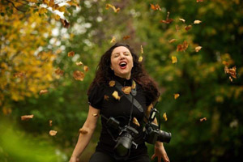

past exhibition |
||
Güler UgurOctober 23 - November 20 Güler Ugur had chosen several photographs for her next exhibition from her early work in the 1990s, when she was a recent immigrant in NYC - these will be shown alongside a few of her final pieces from October 23 - November 20th. The photos display the result of another crime, an act of traffic violence that happened when driver Yosef Lifsh careened onto the sidewalk and killed a young boy named Gavin Cato on August 19, 1991. Güler was present for the funeral, and captured the grief and pain of the community in the midst of the Crown Heights riots. |
||
exhibition archive |
|||
| 2016 | 2015 | 2014 | 2013 |
| 2011 | 2010 | 2009 | 2008 |